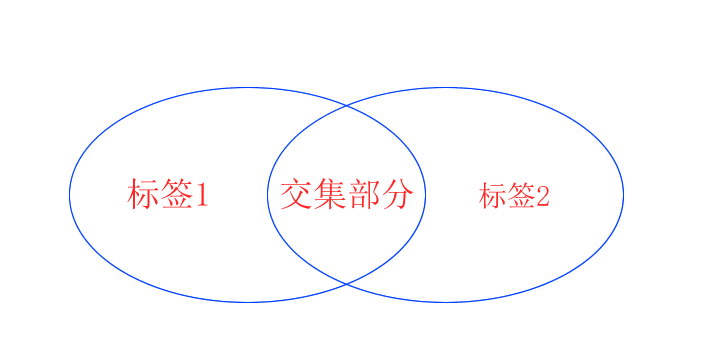
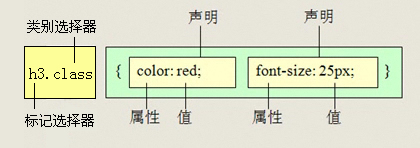

1.概述
HTML只关注内容的语义， 比如<h1>表明这是一个大标题，用<p> 表明这是一个段落，用<img> 表明这儿有一个图片， 用<a> 表示此处有链接。很早的时候，世界上的网站虽然很多，但是他们都有一个共同的特点： 丑。
HTML也曾做过尝试，企图改变丑的面貌。如：在标签内的属性进行style属性设置。但是，如果要改变下 高度或者变一个颜色，就需要大量重复操作。

由于HTML里面添加样式带来的是无尽的臃肿且操作html属性不方便，以至于仅仅通过HTML满足不了设计者的需求。这个时候，需要有个厉害的角色来扛起这面美容大旗— CSS(Cascading Style Sheets) 。
CSS作用：
- 主要用于设置 HTML页面中的文本内容（字体、大小、对齐方式等）、图片的外形（宽高、边框样式、边距等）以及版面的布局和外观显示样式。
- CSS可以针对不同的浏览器设置不同的样式。
2.引入方式
| 样式表 | 优点 | 缺点 | 使用情况 | 控制范围 |
|---|---|---|---|---|
| 行内样式表 | 书写方便，权重高 | 没有实现样式和结构相分离 | 较少 | 控制一个标签（少） |
| 内部样式表 | 部分结构和样式相分离 | 没有彻底分离 | 较多 | 控制一个页面（中） |
| 外部样式表 | 完全实现结构和样式相分离 | 需要引入 | 最多，强烈推荐 | 控制整个站点（多） |
2.1 行内样式
行内样式是通过标签的style属性来设置元素的样式。实际上任何HTML标签都拥有style属性，用来设置行内式。
1
<标签名 style="属性1:属性值1; 属性2:属性值2; 属性3:属性值3;"> 内容 </标签名>
1
<div style="color: red; font-size: 12px;">青春不常在，抓紧谈恋爱</div>
注意：
- style其实就是标签的属性
- 样式属性和值中间是
: - 多组属性值之间用
;隔开。
缺点：
- 没有实现样式和结构相分离
- 只能控制当前的标签和以及嵌套在其中的字标签，造成代码冗余
2.2 内部样式
内部样式（也称内嵌式）是将CSS代码集中写在HTML文档的head头部标签中，并且用style标签定义
1
2
3
4
5
6
7
8
9
<head>
<style type="text/CSS">
选择器（选择的标签） {
属性1: 属性值1;
属性2: 属性值2;
属性3: 属性值3;
}
</style>
</head>
1
2
3
4
5
6
7
8
<div>青春不常在，抓紧谈恋爱</div>
<style>
div {
color: red;
font-size: 12px;
}
</style>
注意：
- style标签一般位于head标签中，当然理论上他可以放在HTML文档的任何地方。
type="text/css"在html5中可以省略。
缺点：
- 只能控制当前的页面
- 没有实现样式和结构彻底分离
2.3 外部样式
外部样式（外链式）是将所有的样式放在一个或多个以.CSS为扩展名的外部样式表文件中，通过link标签将外部样式表文件链接到HTML文档中。
1
2
3
<head>
<link rel="stylesheet" type="text/css" href="css文件路径">
</head>
| 属性 | 作用 |
|---|---|
| rel | 定义当前文档与被链接文档之间的关系，在这里需要指定为stylesheet，表示被链接的文档是一个样式表文件。 |
| type | 定义所链接文档的类型，在这里需要指定为text/CSS，表示链接的外部文件为CSS样式表。我们都可以省略 |
| href | 定义所链接外部样式表文件的URL，可以是相对路径，也可以是绝对路径。 |

2.4 书写风格
样式书写一般有两种：
- 紧凑格式 (Compact)
1
h3 { color: deeppink;font-size: 20px;}
- 展开格式（推荐）
1
2
3
4
h3 {
color: deeppink;
font-size: 20px;
}
2.5 团队约定-代码大小写
样式选择器，属性名，属性值关键字全部使用小写字母书写，属性字符串允许使用大小写。
1
2
3
4
5
6
7
8
9
/* 推荐 */
h3{
color: pink;
}
/* 不推荐 */
H3{
COLOR: PINK;
}
3.CSS样式规则
使用HTML时，需要遵从一定的规范。CSS亦如此，要想熟练地使用CSS对网页进行修饰，首先需要了解CSS样式规则，

规则：
- 选择器用于指定CSS样式作用的HTML标签，花括号内是对该对象设置的具体样式。
- 属性和属性值以
键值对的形式出现。 - 属性是对指定的对象设置的样式属性，例如字体大小、文本颜色等。
- 属性和属性值之间用英文
:连接。 - 多个“键值对”之间用英文
;进行区分。
4.选择器
CSS选择器用于选择你想要的元素的样式的模式。
css 就是 分两件事，选对人，做对事。下面这段代码就是2件事：
- 把
h3选出来 - 把它变成了
红色
1
2
3
h3 {
color: red;
}
选择器分为基础选择器和 复合选择器。
4.1 基础选择器
| 选择器 | 作用 | 缺点 | 使用情况 | 用法 |
|---|---|---|---|---|
| 标签选择器 | 可以选出所有相同的标签，比如p | 不能差异化选择 | 较多 | p { color：red;} |
| 类选择器 | 可以选出1个或者多个标签 | 可以根据需求选择 | 非常多 | .nav { color: red; } |
| id选择器 | 一次只能选择器1个标签 | 只能使用一次 | 不推荐使用 | #nav {color: red;} |
| 通配符选择器 | 选择所有的标签 | 选择的太多，有部分不需要 | 不推荐使用 | * {color: red;} |
4.1.1 标签选择器
标签选择器（元素选择器）是指用HTML标签名(Tag)称作为选择器，按标签名称分类，为页面中某一类标签指定统一的CSS样式。
1
2
3
4
5
标签名 {
属性1:属性值1;
属性2:属性值2;
属性3:属性值3;
}
- 作用：标签选择器 可以把某一类标签全部选择出来 比如所有的div标签 和 所有的 span标签
- 优点：是能快速为页面中同类型的标签统一样式
- 缺点：不能设计差异化样式
1
2
3
4
/*选择h3标签*/
h3 {
color: red;
}
4.1.2 类选择器
类选择器使用.（英文点号）进行标识，后面紧跟类名。
1
2
3
4
5
.类名 {
属性1:属性值1;
属性2:属性值2;
属性3:属性值3;
}
- 优点：可以为元素对象定义单独或相同的样式。 可以选择一个或者多个标签
- 注意:
- 类选择器使用
.（英文点号）进行标识，后面紧跟类名(自定义，我们自己命名的) - 长名称或词组可以使用中横线来为选择器命名。
- 不要纯数字、中文等命名， 尽量使用英文字母来表示。

1
2
3
4
5
6
7
8
9
10
11
12
13
14
15
16
17
18
19
20
21
22
23
24
25
26
27
28
29
<head>
<meta charset="utf-8">
<style>
.blue {
color: blue;
font-size: 100px;
}
.red {
color: red;
font-size: 100px;
}
.orange {
color: orange;
font-size: 100px;
}
.green {
color: green;
font-size: 100px;
}
</style>
</head>
<body>
<span class="blue">G</span>
<span class="red">o</span>
<span class="orange">o</span>
<span class="blue">g</span>
<span class="green">l</span>
<span class="red">e</span>
</body>
除了上面的示例中，采用的单类选择器，也可以采用多类选择器，如下
1
2
3
4
<div class="pink fontWeight font20">亚瑟</div>
<div class="font20">刘备</div>
<div class="font14 pink">安其拉</div>
<div class="font14">貂蝉</div>
注意：
- 各个类名中间用空格隔开
- 多类名选择器在后期布局比较复杂的情况下，还是较多使用的
4.1.3 id选择器
id选择器使用#进行标识，后面紧跟id名。
1
2
3
4
5
#id_name {
属性1:属性值1;
属性2:属性值2;
属性3:属性值3;
}
元素的id值是唯一的，只能对应于文档中某一个具体的元素
用法基本和类选择器相同
4.1.4 通配符选择器
通配符选择器用*号表示， * 就是 选择所有的标签 。
1
2
3
4
5
* {
属性1:属性值1;
属性2:属性值2;
属性3:属性值3;
}
1
2
3
4
5
/*使用通配符选择器定义CSS样式，清除所有HTML标记的默认边距*/
* {
margin: 0; /* 定义外边距*/
padding: 0; /* 定义内边距*/
}
注意：通配符选择器会匹配页面所有的元素，降低页面响应速度，不建议随便使用
4.1.5 团队约定
选择器
- 尽量少用通用选择器
* - 尽量少用 ID 选择器
- 不使用无具体语义定义的标签选择器
div,span
1
2
3
4
5
6
7
8
9
/* 推荐 */
.jdc {}
li {}
p{}
/* 不推荐 */
*{}
#jdc {}
div{} /* 因为div 没有语义，我们尽量少用 */
4.2 复合选择器
CSS基础选择器不能满足我们实际开发中快速高效选择标签的要求，所以引入复合选择器。复合选择器是由两个或多个基础选择器通过不同的方式组合而成的。
| 后代选择器 | 用来选择元素后代 | 是选择所有的子孙后代 | 较多 | 符号是空格 .nav a |
|---|---|---|---|---|
| 子代选择器 | 选择 最近一级元素 | 只选亲儿子 | 较少 | 符号是> .nav>p |
| 交集选择器 | 选择两个标签交集的部分 | 既是 又是 | 较少 | 没有符号 p.one |
| 选择器 | 作用 | 特征 | 使用情况 | 隔开符号及用法 |
| 并集选择器 | 选择某些相同样式的选择器 | 可以用于集体声明 | 较多 | 符号是逗号 .nav, .header |
| 链接伪类选择器 | 给链接更改状态 | 较多 | 重点记住 a{} 和 a:hover 实际开发的写法 |
4.2.1 后代选择器
后代选择器又称为包含选择器，用来选择元素或元素组的子孙后代
1
2
3
4
5
/* 写法就是把外层标签写在前面，内层标签写在后面，中间用**空格**分隔，先写父亲爷爷，在写儿子孙子。 */
父级 子级{
属性1:属性值1;
属性2:属性值2;
}
1
2
3
4
5
6
7
8
<div class="out_level">
<h3>青春不常在，我要谈恋爱</h3>
</div>
.out_level h3{
color:red;
font-size:25px;
}

4.2.2 子元素选择器
子元素选择器只能选择作为某元素子元素(亲儿子)的元素。
1
2
3
4
5
6
7
8
<div class="out_level">
<h3>青春不常在，我要谈恋爱</h3>
</div>
/* 写法就是把父级标签写在前面，子级标签写在后面，中间跟一个 > 进行连接*/
.out_level>h3{
color:red;
font-size:25px;
}
注意：这里的子 指的是 亲儿子,而不包含孙子、重孙子之类。
4.2.3 交集选择器
交集选择器由两个选择器构成，找到的标签必须满足：既有标签一的特点，也有标签二的特点。

1
p.one 选择的是： 类名为 .one 的 段落标签。

用的相对来说比较少，不太建议使用。
4.2.4 并集选择器
如果某些选择器定义的相同样式，就可以利用并集选择器，可以让代码更简洁。这是在实战中用的非常多的选择器，需要重点掌握。
1
2
/*表示 .one 和 p 和 #test 这三个选择器都会执行颜色为红色。 通常用于集体声明。 */
.one, p , #test {color: #F00;}
1
2
3
4
5
6
7
8
9
10
11
12
13
14
15
16
17
18
19
20
21
22
23
24
25
26
27
28
29
30
31
32
33
34
35
36
37
38
39
40
<!DOCTYPE html>
<html>
<head>
<meta charset="utf-8">
<title></title>
<!--
1. 链接 登录 的颜色为红色
2. 主导航栏里面的所有的链接改为橙色
3. 主导航栏和侧导航栏里面文字都是14像素并且是微软雅黑。
-->
<style type="text/css">
.site-r>a{
color: red;
}
li>a{
color: #FFA500;
}
.nav a,.sitenav a{
font-size: 14px;
font-family: "Microsoft YaHei";
}
</style>
</head>
<body>
<!-- 主导航栏 -->
<div class="nav">
<ul>
<li><a href="#">公司首页</a></li>
<li><a href="#">公司简介</a></li>
<li><a href="#">公司产品</a></li>
<li><a href="#">联系我们</a></li>
</ul>
</div>
<!-- 侧导航栏 -->
<div class="sitenav">
<div class="site-l">左侧侧导航栏</div>
<div class="site-r"><a href="#">登录</a></div>
</div>
</body>
</html>
4.2.5 链接伪类选择器
用于向某些选择器添加特殊的效果。比如给链接添加特殊效果， 比如可以选择 第1个，第n个元素，引入伪类选择器的概念
伪类选择器很多，比如链接伪类，结构伪类等等，这里讲解链接伪类选择器。
1
2
3
4
5
/* 伪类 用 2个点 就是 冒号 比如 :link{} */
- a:link /* 未访问的链接 */
- a:visited /* 已访问的链接 */
- a:hover /* 鼠标移动到链接上 */
- a:active /* 选定的链接 */